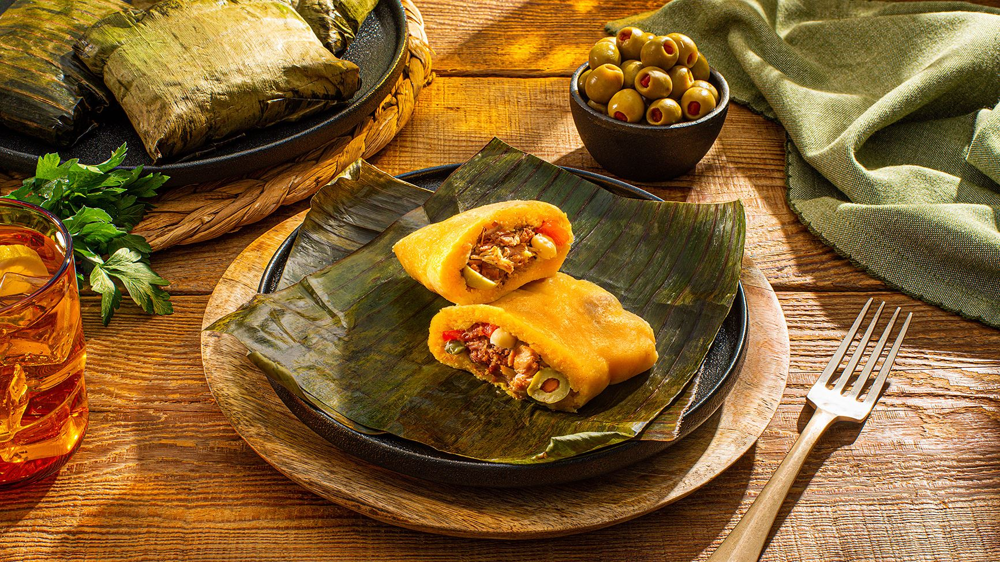
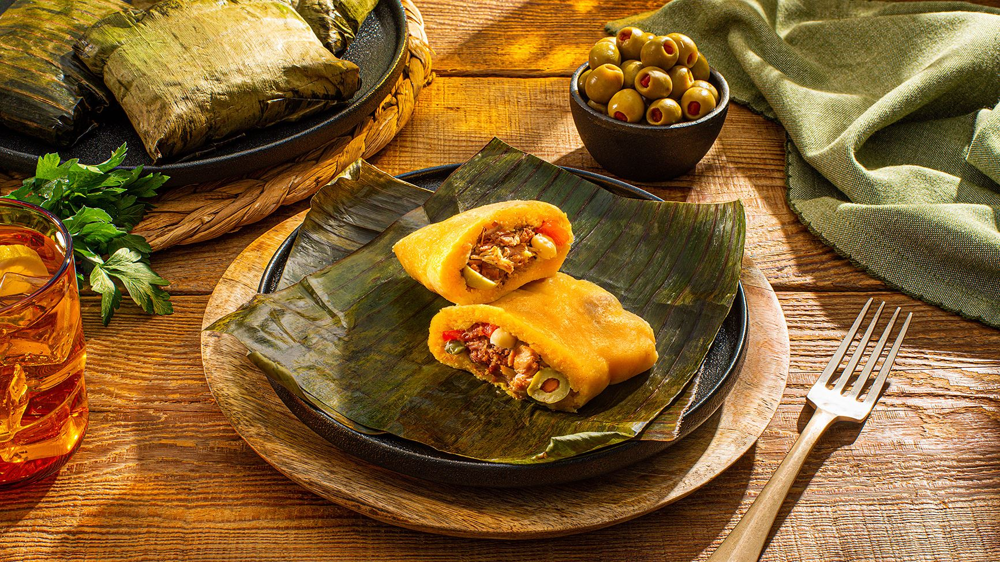

Ciudad Natal
Caracas, la ciudad natal de Alex Mírez, es la capital y ciudad más grande de Venezuela. Ubicada en el norte del país, a los pies del imponente Cerro El Ávila, es una ciudad vibrante, llena de historia, cultura y tradiciones culinarias.
Breve Descripción:
Caracas fue fundada el 25 de julio de 1567 por Diego de Losada. A lo largo de los siglos, se ha transformado en el centro político, económico y cultural del país. Sus calles son un contraste entre la modernidad de sus rascacielos y la historia colonial que se refleja en el casco histórico.
El corazón de la ciudad está rodeado por el Parque Nacional Waraira Repano, conocido también como El Ávila, una maravilla natural que ofrece una vista impresionante de la ciudad y el Mar Caribe. Es un espacio icónico para los caraqueños, ideal para el senderismo, el descanso y la conexión con la naturaleza.
Comidas favoritas
- Arepas: El plato más emblemático de Venezuela. En Caracas, las arepas se rellenan con una infinidad de ingredientes, desde queso hasta carne mechada, aguacate y caraotas negras.
- Pabellon: Considerado el plato nacional, compuesto por arroz blanco, carne mechada, plátanos fritos y caraotas negras.
- Cachapas: Tortas de maíz dulce, generalmente acompañadas de queso de mano o nata.
- Tequeños: Palitos de queso envueltos en masa frita, populares como aperitivo o merienda.
- Hallacas: Plato tradicional navideño, similar a un tamal, hecho con masa de maíz rellena de un guiso de carne, envuelta en hojas de plátano.

 
